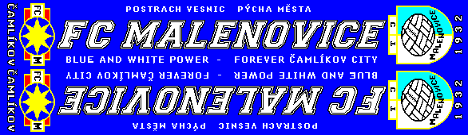

Fotogalerie
Logo

Šála
O klubu
Název klubu: Fotbalový klub Malenovice
Adresa klubu: Tyršova, 763 02 Zlín 4
Založení klubu: 1932
Barvy klubu: modrá, bílá, červená
Trenér A mužstva: Ivo Malota
Trenér dorostu: Zdeněk Gistr
Trenér žáků: Radoslav Střelec
Trenér přípravky: Radoslav Střelec
Manažer a viceprezident: Vladislav Hamrla
Správce hřiště a metodik mládeže: František Zálešák
Hlavní postranní rozhodčí: Petr Bůžek
Vedoucí klubu: Zdeněk Vichorec
První krok k založení fotbalového klubu v Malenovicích se uskutečnil schůzí milovníků fotbalu v bývalém hostinci Podskalí , který ležel pod hradem v roce 1932. Karel Mrlík, Jaroslav Plšek a Vojtěch Číhal získali na ředitelství malenovického velkostatku dohodu o pronájmu pozemku v cihelnách nad starým hřbitovem pro provedení úprav na hřiště pro kopanou. Z příspěvků prvních členů se nakoupily dresy, a tak nově vzniklo mužstvo, které nemělo ani vlastní hřiště, ale mohlo vyjíždět k prvním přátelským utkáním do širokého okolí. Složení: Benešovský, Němec, Khýr, Číhal, Landsfeld, Jiřík ml., Jiří k st., Plšek, Strojil, Mrlík, Mal.